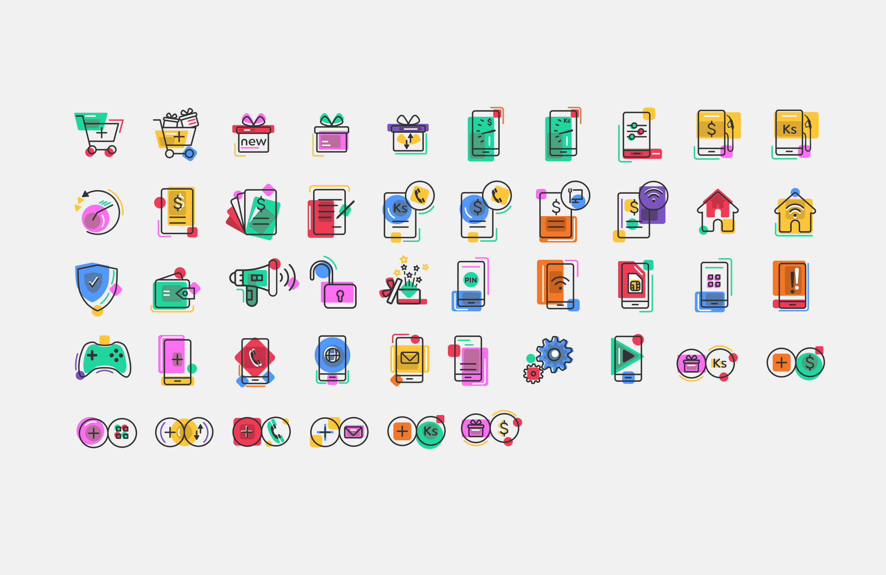
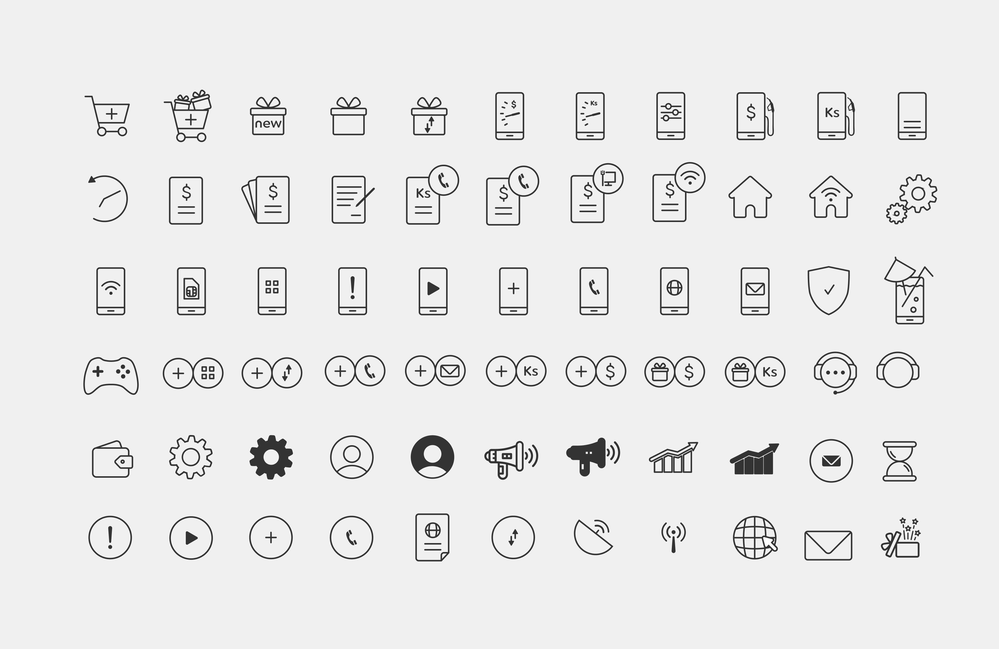

-

Icon Design
We have been designing icons every day for more than 15 years. Meanwhile, you have probably read a lot about icon design. We will not give you a long presentation of what a good icon is but if you want to read something about it, check the end of this article — you’ll find links to useful stuff there. Yet, the main aim of this post is to let you go through all the process of icon creation step by step and provide you with a basic checklist what to review in a newly created icon set.The icon design guidelines have been written by various designers. Even when the design trends change, icon design stays based on the old principles of consistency, legibility, and clarity. Therefore, the process of designing an icon is simple enough if you follow a short bunch of rules. But based on our experience, keeping all the rules in mind while drawing an icon set can be challenging. We are going neither to reinvent the wheel nor repeat the general rules. Instead, we will share our internal working process details hoping it will help you organize your work efficiently.
Here’s quite an effective flow for icon creation. As you can see, the process starts much earlier than the first line is drawn. Understand what icon set you have to create: consider where it will be used and what it should represent. Decide which icons require a metaphor and which are just real-world objects. Think about proper metaphors and brainstorm on the possible symbols. Write down all the associations you have to depict the essence of an icon in the best way. Use dictionaries and word sets to find keywords, synonyms, and definitions of the concept you need to represent in an icon. Simplify the idea to the point you will find an object that translates the idea of abstract concepts clearly. Don’t stay tete-a-tete with the task and conduct thorough research to collect the necessary references. Probably somebody has already designed the great version of icons for the needed theme and you could find some inspiration.Choose an icon style: outlined, flat, material, glyph, hand-drawn, etc. Take into consideration the interface your icons will be used in. The choice depends on both general requirements for this type of interfaces (for example, iOS or Material) and the stylistic concept of a particular UI layout. Sketch your ideas in a chosen style to see if it works just the right way. Keep consistency across the whole set. Vectorize the best sketches. Test the icons in the UI layout and enjoy.
-

Recognizability
Recognizability is a product of an icon’s essence or what makes an icon unique. Whether an icon works ultimately depends on how easily the viewer comprehends the object, idea or action it depicts. Recognizability includes showing the properties that the viewer commonly associates with that idea, but it can also include elements that are unique or unexpected, such as the heart for the Corgi’s nose. Remember that recognizability refers not only to comprehension of the object, idea or action being depicted, but also to recognition of your unique icon set. In this respect, aesthetic unity and recognition can, and often do, overlap. In the image below, we recognize each of the two dogs as a Corgi and Siberian Husky, respectively, because of their unique colors, head shape and ears, while still recognizing them as part of the same set because of the shared design and style elements.
Show Portfolio
Get In Touch
Please do not hesitate to contact me if you need help improving the UX of your product or if you would like to collaborate on future projects.
Contact Me